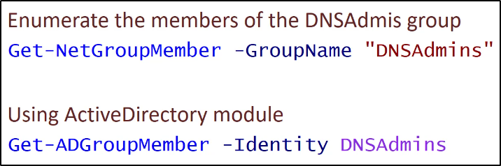
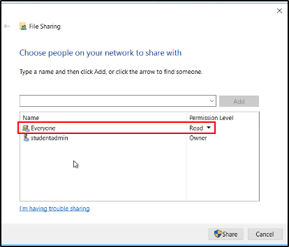

DNSAdmins
Articolo:
https://medium.com/@esnesenon/feature-not-bug-dnsadmin-to-dc-compromise-in-one-line-a0f779b8dc83
E' possibile per membri del gruppo DNSAdmins
di caricare DLL arbitrarie, tramite i privilegi
del comando dns.exe (SYSTEM)
NB: dns.exe è semplicemente il servizio DNS che runna sui dns!
NB: Di base, i DNSAdmins non hanno il permesso di ravviare il DNS!
Nel caso il Domain Controller sia anche DNS,
questo provvederà una privesc a Domain Admins!
Necessitiamo dei privilegi per restartare il DNS.
Quando conosciamo quali sono i membri del gruppo DNSAdmins,
dobbiamo comprometterne uno.
Ci basta ottenere in qualche modo una password o hash.



Prima di tutto, shariamo la DLL all'utente DNSAdmin compromesso
in modo che possa scaricare la DLL di Mimikatz:


Ora, sull'account DNSAdmin compromesso,
importiamo la DLL:

(SOLO ESPLICAZIONE GRAFICA)
Ora possiamo vedere come sia stata aggiunta la libreria nel registro
dei parametri della macchina DNS:

Infine, col nostro utente DNSAdmin, possiamo ravviare il servizio DNS:


(SOLO SCOPO GRAFICO)
Possiamo notare sul DNS che l'azione è stata registrata:

Infine, possiamo fare tutto quello che vogliamo editando il kdns.c
NB: Se chiami una shell in kdns.c, sarà Syncronous e non Asyncronous!
NB: E' tendenzialmente molto silent ed undetectable chiamare una shell così!

Per annullare questo attacco,
basta semplicemente stopppare il DNS,
eliminare il paramentro dal registro della DLL
e riavviare il DNS